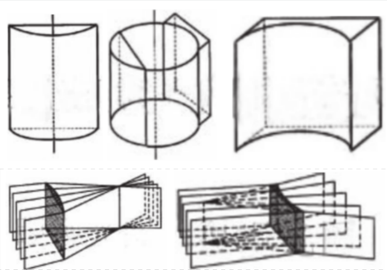
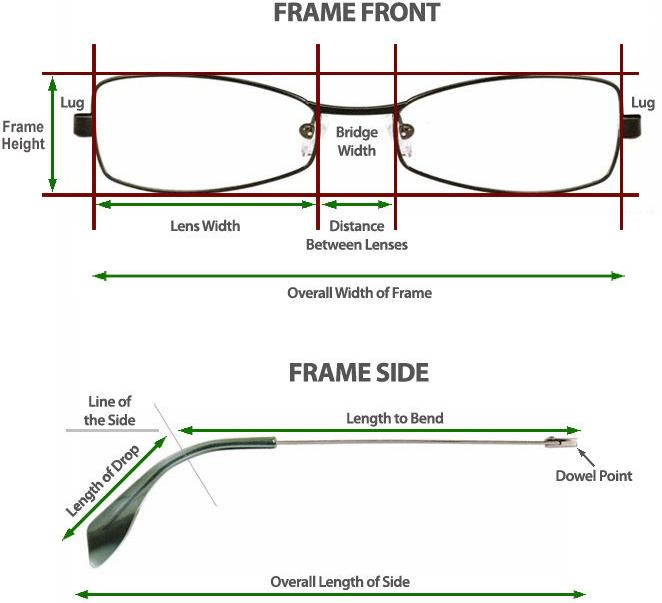
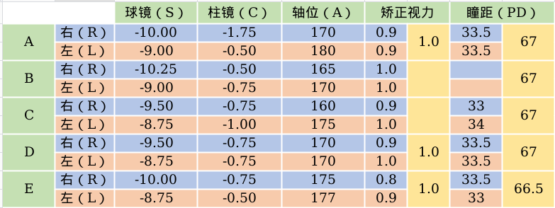

因为没有钱直接去买最好的东西，没有钱直接去享受最好的服务，而我又想用有限的钱享受还算可以的服务，因此每当我消费（买电脑、买手机、买雨伞、买笔、买衣服、买鞋，预感未来买汽车、买房子……）之前我都要深入了解有关的一切信息，然后作出最适合自己的决定，这样的流程让我深入了解了各行各业. 贫穷 + 不妥协 = 浪费时间. 然而这些浪费的时间只在消费当时发挥作用，多年后再次消费同类产品时往往还要再次浪费时间——除了随着科技进步的业界革新之外，更重要的原因是过一段时间后这些学到的知识就被我忘记了，因为不是专业人士，不常用也无需复习. 为了减少之后重新学习的时间成本，也为了给其他有同样需求的人一定的参考，我开设了这个系列.
【这个系列的内容都是偏向于客观的知识的阐述，列出的参考中会有一部分偏方法论的内容.】
第一篇介绍配眼镜. 配眼镜有四个步骤：验光、选镜架、选镜片和定配.
以下是我个人的理解.
需要先指出的是最佳视力这个概念，一个人的最佳视力是由视网膜黄斑中心的视锥细胞多少决定的，这是由基因决定的，是一个人的能力. 大多数人类的最佳视力取平均得到标准视力. 分为如下几类：
1.最佳视力达不到标准视力：可能有某些疾病，可能是弱视；
2.最佳视力能达到标准视力：
2.1 裸眼视力能达到标准视力：正常；
2.2 裸眼视力达不到标准视力：
2.2.1 由于眼睛的调节能力有限，无法使光聚焦在视网膜上：屈光不正，可以佩戴眼镜、在角膜上做手术等解决.
2.2.2 由于大脑没有学会控制眼睛，使得光偏偏不聚焦到视网膜上：可能是弱视（弱视的定义我并没有看明白）.
我们这里的配眼镜，只针对 2.2.1 的情况.
验光数据有四部分，球镜（S、Sph）、柱镜（C、Cyl）、轴位（A、X、Ax）、瞳距（PD）. 其中前三部分数据要分左眼（L、LE、OS）、右眼（R、RE、OD）；这四部分数据都要分远用（DV）、近用（NV）.
球镜分为凸透镜和凹透镜，它们都有焦点，凸透镜焦点到中心的距离称为凸透镜的焦距，凹透镜虚焦点到中心的距离的相反数称为凹透镜的焦距. 球镜的焦距单位为米（m）. 焦距的倒数称为屈光度，单位规定为 D. 屈光度乘以 100 就是常说的度数，度数为正数时就是常说的远视度数，度数为负数时取绝对值就是常说的近视度数. 验光时记录的数据为屈光度.

柱镜初中物理好像都没学过，但其实也很好理解. 柱镜分为凸透柱镜（见上图上排左）和凹透柱镜（见上图上排右），通过凸透柱镜的一族平行光线并不聚焦于一点而是聚焦于一条与圆柱母线平行的直线，光线线路均与这条直线垂直（见上图下排左）；凹透柱镜则是能把一族平行光线发散使其反向延长线聚于一条与圆柱母线平行的直线（见上图下排右）. 也类似球镜地定义焦距、屈光度、度数，这里的度数就是常说的散光度数. 验光时记录的数据为屈光度.
柱镜的焦线与水平直线的角度，就是常说的散光轴位.
两眼瞳孔中心的距离，单位是毫米（mm）. 使用瞳距仪测量是最准确的，测量时应由被测量者手持瞳距仪.
近用球镜度数和远用球镜度数的差的绝对值.
简单地说，验光有如下流程：
通过全自动电脑验光仪进行客观验光. 盯着一张风景图（红房子/热气球）看，通过红外线测出屈光状态.
往试镜架上插、拔各种不同度数的镜片，看视力表，是一种简单粗暴的、过时的、并不准确的主觉验光法.
步骤是，左右眼分别的最佳视力的最大屈光度 (MPMVA)、红绿测试、散光测试，双眼视力平衡调整. 综合验光仪方法是目前（2019 年）眼视光学界公认最好的设备方法.
中国大陆的职业认定为：眼镜验光员，职业编号 4-07-06-01. 根据职业概况简介，可分为：眼镜验光员初级、眼镜验光员中级、眼镜验光员高级、眼镜验光员技师、眼镜验光员高级技师五个档次. 证书可在国家职业资格证书全国联网查询网站查到.
我参考的有：
主要是个人喜好与个人审美的问题. 大致思路是圆脸配方框，方脸配圆框.
也是个人喜好与个人审美的问题.
科技不断进步，新的材质越来越多；但至目前，还未有一种材质，对眼镜架称得上是十全十美的，因镜为架的要求很多：
（1）弹韧性好（戴得舒服、不易断）；
（2）硬度够（不变形）；
（3）遇热（约70-100℃）能浓缩（好装镜片）；
（4）对染、着色之亲和力佳（加工染色易，且不易掉色）；
（5）耐热（防烧）；
（6）耐蚀性佳（不会被汗酸或晏油等腐蚀）；
（7）不刺激皮肤.
目前已有的材质可大致分为：天然、塑料和金属.
古代曾用牛等动物的角来做镜框. 但现已不常使用，广泛地被塑料代替了.
取自玳瑁（海龟科的一种海龟，是玳瑁属下唯一一种）的壳，一般能制作镜框之玳瑁其年龄“传说”需百年以上 ，主要产地包括巴哈马群岛及西印度群岛，此产地产品质量较高，近年来产量不多，并且玳瑁被一些国家列为保护动物，所以已很少用. 玳瑁的品质以颜色而论，约计有 琥珀、金黄、亚黄、灰暗、中斑、中红、深斑及乌云八种. 制造过程多用手工，加热方法多采用热盐水. 传说玳瑁还有吉祥辟邪之作用，并且被视做身份象征.
优点：重量轻，非常耐用，色泽光亮，独特珍奇引人注目，不会使皮肤发生过敏现象.
缺点：贵，不利于动物保护，调整麻烦（需要使用沸水），保养麻烦（浸水）.
用于制造镜架的塑料材料品种繁多，大致可分为板材和注塑成型两种. 整体而言，板材和注塑成型的差别在于板材的不褪色，较不易断裂；注塑成型的造型变化大，较有立体感；板材的相对制造成本比注塑成型的高出很多，主要是贵在人工.
俗称赛璐璐，Hyatt 兄弟于 1869 年首先制成最早之热固塑胶，由纤维素硝酸盐、樟脑和软化剂制造而成. 因易燃烧，目前欧美各国禁止使用于镜架上. 它的特点是：
A. 高硬度、耐刮性强；
B. 对皮肤及分泌物之稳定性高，不易侵蚀或受侵蚀；
C. 对水具有稳定性，但具有吸湿性；
D. 易燃；
E. 易被有机溶剂如丙酮溶解.
市面上最多的板材料，市面上的板材料几乎都是醋酸纤维素.
醋酸纤维素是为了改良硝酸纤维素（赛璐珞）易燃的缺点而研究发明的原料. 不易燃烧是它的最大特点，至于其他性质则较硝酸纤维素（赛璐珞）差；不过这个缺点倒可以通过加工或其他方法来弥补，所以经过加工以后的制成品，其外观几乎与赛璐珞制品没有区别. 制法为：将棉毛（第一次轧棉后剩余材料）化学处理成粉状，溶解于醋酸中，加入塑化剂混合成面粉状；经过滤程序后，再以高温压成大块板状；最后以干燥处理除去游离丙酮，再铣切加工成适当大小之条状或切片，故通称为板材. 其特性为：
A. 不易燃烧；
B. 比重小，大约是 1.28 ~ 1.32；
C. 几乎不受紫外线的照射而变色；
D. 硬度较大光泽度好、耐用，不易烘烤加工，温度应在115-130度，过高会发泡；
E. 款式比较美观，配戴后不易变形.
优点：表面硬度高；不需表面处理，质感高贵；耐磨；可以根据不同的脸部尺寸做适当的舒适性调整；是国际服饰类品牌眼镜品类产品中较多选用的成熟材质.
缺点：材质较硬如果调整不恰当舒适性较差；酸性料不能配PC材质的镜片（会导致镜片开裂）；较重；会回平（因为是由平板切割而成）需要调整，镜脚需铜芯定型.
市面上不多，但已在国外市场超过6年.
优点：市面上比较完美地解决包裹内容物（薄片状的真实干花、不锈钢薄片、牛仔布料、蕾丝等等）的材料，呈现的质感更有立体感和层次感；表面无喷漆电镀处理，经久耐用；质地较醋酸纤维素轻；柔韧性也较醋酸纤维素好；可以适度调整镜架以更加贴合脸部尺寸.
缺点：表面硬度较醋酸纤维素低；表面质感不如醋酸纤维素好.
注塑成型工艺是将塑料米（目前主要为PC、塑钢、TR）熔融，注射进模具内冷却成型. 优点是整批的尺寸稳定性较高，加工速度快，综合成本低. 缺点是大多数经过表面喷漆处理，不耐磨易褪色，易漆层剥落. 具体如下：
就是曾被营销为“太空片”的材料，超过10mm就是防弹玻璃.
优点：材料价格较低；有一定的柔韧性；耐冲击（这就是被称为太空片的原因），皲裂但不会有碎屑崩裂.
缺点：表面喷漆不环保，漆层易剥落；舒适性较差，耐用性也不好；镜架无法因应不同脸型做出调整.
目前被大量使用的材料. 柔韧性优异，曾被营销为“记忆塑料”.
优点：材质透明度高；柔韧性好，可以迁就不同尺寸的需求，耐挤压踩踏（会断裂的是因为加入再生料所致）；质地很轻.
缺点：表面喷漆处理，不环保，喷漆技术差的漆层也会很快剥落（好的大约2年）；因为弹性很好，镜架无法调整，镜框的柔软也给技术差的加工镜片师傅以最大的宽容度，就是说做很差的镜片很容易装入镜架.
也被称为钨钛，最近 2 年来（2017 年）越来越普及.
优点：强度及表面硬度比TR好；柔韧性比TR略低，比PC高；质轻；因强度高，可以做出非常纤细的圈形，可以做出最接近金属镜架的超细镜框，当然，掌握这项技术的企业还不多；表面漆层附着力较高.
缺点：表面亚光质感，需要喷漆处理，对喷漆技术的要求很高，技术不过关的镜架喷漆后会导致镜架容易脆断.
主要用于装饰性配件和镜脚 .
优点：质地轻盈，高强度、耐高温、表面有独特的质感；具有良好的耐热性、耐腐蚀和耐药品性.
缺点：无延展性、不易变形 ，大幅度弯折易断裂；不能做透明色，颜色受到限制；.
有白铜（以铜为主，主要添加镍、锌等）、锰镍（以锰为主，主要添加镍等）、高镍（以镍为主，添加铬、锰等）、镍铜（以镍为主，添加铜等）等合金材质，在强度、耐腐蚀性等物理化学性能方面略有差异.
优点：材料价格较低（特别是白铜）；加工难度低；易于调整镜架.
缺点：电镀附着力较差，易腐蚀生锈；部分人易金属过敏；易受挤压变形；较重.
基本上是以薄片不锈钢材料冲压成型.
优点：柔韧性好，耐变形；重量轻；表面IP电镀处理的，耐用性强.
缺点：不能调整；度数高的镜片较厚，影响美观；表面喷漆处理的镜架易脱漆，不耐用.
比较理想的金属镜架材质 .
优点：强度高，不易变形，但可调整镜架；不易金属过敏；IP电镀后附着力高，耐用性高；质轻.
缺点：材料价格高，加工难度大，导致价格较高.
广泛用于细丝状镜脚、鼻秋、纤细镜框等高弹性要求的镜架中 .
优点：柔韧性好，不易变形；质轻.
缺点：不适合高度数人群（镜框前端重量过重易下滑，镜片过厚影响美观），不能调整. 材料价格高加工难度大，价格较高.
镜架的尺寸会标注在镜腿上，有基线标注法（格式为：aa-bb-ccc）和方框标注法（格式为：aa◻︎bb-ccc）两种测量标注方法. 基线标注法先取最高水平线与最低水平线的中间位置水平线做基线，然后任何数据的测量都在基线上进行；方框标注法则先画出与镜片相切的、以水平线与竖直线为边的、最小的矩形，再测量这个矩形的数据. 方框标注法比较常用. 以我之前戴的一副旧眼镜为例，它的尺寸标注为：53◻︎17-138. 其中第一个数据 53 是镜片宽度，第二个数据 17 为鼻梁宽，第三个数据 138 为镜腿长，单位均为 mm.
下图演示了镜框的基础元素以及组成部分. 由于镜框的安装原因，鼻梁架也许是选择镜框时最应该考虑的部分，因为这部分是主要的受力面，同时也是位于连接眼镜前端与面部的地方. 鼻梁架的设计应该有利于舒适感及辅助作用，这保证了当双眼在自然凝视状态下，镜片所处的位置是正确的.

镜片宽度是指单个镜片的最大水平距离.
鼻梁宽度是指，塑料或金属材质镜框中，鼻梁处镜框之间的最小水平距离；或者无框眼镜中，鼻梁处镜片之间的最小水平距离. 如果鼻垫是可调节的，则可以自行调节至最舒适的角度.
下列情况可能需要调大鼻垫之间的距离：
下列情况可能需要调小鼻垫之间的距离：
镜腿长是指，镜腿起点至镜腿末端的总长度. 由起点到弯曲点的距离和弯曲点到末端的距离两部分组成.
我参考的有：
镜片根据焦点数可分为单焦点（单光）、多焦点（渐进）两种. 多焦点可以兼顾看远（从镜片上部看）和看近（从镜片下部看），目标人群为老年人（近视 + 老花眼）或青少年（视力矫正/抗疲劳），这类配镜需要近用和远用两套数据以及下加光（见上文）. 对于普通的近视、远视等配镜，选择单焦点即可，只需要远用的一套数据，也不需要下加光.
镜片按照需求又分为多种，如染色、变色、偏光等. 染色分为由眼镜店染色的染色镜片和预先染制的近视太阳镜两种，主要是在阳光下对眼睛进行紫外线防护. 变色镜片也叫感光镜片，它在遇到紫外线时（而不是在强光时）会变成深色成为墨镜，紫外线不足时变成透明色成为普通眼镜，变色镜片又可分为基片变色和膜层变色两类. 偏光镜片则是过滤某个特定偏振方向的光，在水面、雪地上对过滤水平面的刺眼强光有帮助，影院的一些 3D 眼镜也有用到偏光镜片.
形状大致分为球面、非球面以及双非球面，非球面的发明是为了解决球面镜边缘变形的问题，双非球面可以在其他条件相同的情况下比非球面镜更薄.
材质大致分为树脂和玻璃.
树脂轻便但硬度低、光学性能不出色、折射率不高（1.50 - 1.74），硬度低的问题通过膜层几乎可以解决，膜层也是目前大多数镜片之所以贵的原因；光学性能与折射率的问题只能通过寻找新材料来解决. 这里需要指出的是，不同的折射率使用的是不同的树脂材料. 比如 1.50 折射率的材料为ADC（碳酸烯丙基二甘醇酯）；1.60 折射率的材料为亚克力（聚甲基丙烯酸甲酯）、PC（聚碳酸酯）、MR-8（MR 系列材料单体为聚氨酯，均由日本三井化学研发）；1.67 折射率的材料为 MR-7、MR-10；1.74 折射率的材料为 MR-174.
玻璃密度大、比较重且容易碎裂，但玻璃硬度高不易磨损、光学性能出色非常清晰、折射率能达到 1.8 - 1.9.
折射率是光在真空中的速度与在介质中的速度之比，决定了光进入介质时路径的弯曲程度，即镜片折射光线的能力，折射率越高，同等的度数就越薄.
阿贝数由德国物理学家阿贝发明，用来衡量介质的光线色散程度，光的色散是因为光的速度与频率有关而造成的不同频率（颜色）的光分离的现象，这是在初中物理的棱镜实验中学到的. 色散程度越小则阿贝数越高，自然光经眼镜折射后越不容易发生色散，看起来也就越清晰. 一般地，折射率越高，阿贝数越低，但由于材料的性质这一点也不完全正确.
比重就是密度，相同体积的情况下比重越小则质量越小（轻）.
膜层的宣传主要集中在以下方面：
硬度：硬度越高，越耐用，越不易刮花.
增透减反射.
防尘.
防水：越不易沾水，越方便清洁保养.
防静电.
防雾.
防蓝光：目前没有足够的证据表明蓝光对人眼有害而无利. 就目前学界的共识，小于 400nm 的蓝光/蓝紫光可以和防紫外线一起处理；400-480nm 的短波蓝光高强度（1500 lx）长时间（2 h以上）照射才对视网膜产生损害；480-500nm 的蓝光还有一定的调整生物节律的功能，与情绪、睡眠、记忆力都有一定关系. 因此防蓝光主要还是作为一个卖点出现的.
防紫外线：紫外线对人眼的伤害还是有的，但一般通过专门的防紫外线的太阳镜解决.
为了方便配镜，很多度数的镜片是有加工好的一片圆形的透镜的，在这个度数区间内，直接将加工好的圆形透镜切割成镜架的形状再装入即可完成. 这样的一些圆形透镜叫做现片，现片的屈光度数每 0.25 D 一档（这也是验光的最小单位），现片的屈光度数范围就叫做现片范围.
一些过高的度数则不备现片，超过现片范围的度数需要单独订做，单独订做的屈光度数范围叫车房范围.
现片范围与车房范围在官网/价目单中都是一个矩形或一个梯形，并在顶点处标注屈光度数. 竖向为球镜屈光度数范围，横向为柱镜屈光度数范围.
镜片的品牌很多，镜片的介绍可以在其官方网站查看（多数没有价格），也可以在眼镜店找价目单查看带有价格的版本.
很久以前在各种地方零零散散学习了很多知识，这次基本是自己独立写成，也参考了一些专有名词的维基百科，以及如下一些页面：
当然对这整个行业的了解这些文章远远不够，应该找专业的文献、书籍来系统学习，不过对于普通的配眼镜的消费者，读这些科普的文章对购买眼镜来说已经绰绰有余了，这个限度就定在这里.
定配就是把镜片经过切割与加工再装入镜架的过程. 这部分内容互联网上比较少，藏得也比较深，大家也往往不太注意这个步骤. 但其实这个步骤还是很有讲究的.
根据瞳距、镜框宽度和镜片直径进行可行性分析. 基本原则是使戴上眼镜正视前方时，瞳孔正好在镜片的视觉中心（圆形透镜的圆心，凹透镜的最薄点、凸透镜的最厚点）前面. 如果现片的直径不够切割，则需要更换镜框宽度更小的镜架.
扫描镜架；用查片仪确定镜片的屈光度、轴位；用中心仪确定视觉中心并将加工贴压上去.
确定好瞳高、瞳距、尖边槽（镜框在镜片的位置，前面露出多少，后面露出多少）等，用切片机将镜片切成要装入镜框的形状，也可以用全自动磨边机或手动磨边机将镜片磨成.
倒边可以让边缘不那么锋利，看上去稍薄一些，但倒边越多在正面会出现越大的一圈白晕；抛光可以让边缘清晰透亮，但边缘会有眩光.
这里没在互联网上看到有比较专业的资料介绍，按我的理解，可能不同的镜架使用不同的装入方法，比如全框金属镜框有一些设计了一个螺丝刀调松的地方，可以调松后装入镜片再调紧；没有这个设计的可能是通过加热让镜框变软，然后用力推进去；半框的可能是先松一下钓鱼线或者直接把钓鱼线拉进凹槽内；无框的则在镜片上打孔. 虽然这类知识也可以到图书馆找专门的书籍来学习，但作为消费者，在这个环节了解到这个程度应该就可以了.
中国大陆的职业认定为：眼镜定配工，职业编号 4-07-06-02. 根据职业概况简介，可分为：眼镜定配工初级、眼镜定配工中级、眼镜定配工高级、眼镜定配工技师四个档次. 证书可在国家职业资格证书全国联网查询网站查到.
【这一部分不客观、不普适，有我个人的审美、所在地域（北京）等因素.】
我在某一天去了启明眼镜（大望路店）、大明眼镜（王府井旗舰店）、jins（王府井店）和宝岛眼镜（顺迈店）四个不同的地方进行验光，并到同仁验光配镜（中心店）旁观了验光工作. 同时也简单挑选了镜架，看了价目单对镜片进行了了解.
启明眼镜是在互联网上看到的评价比较高的一家眼镜店，验光免费. 可以在微信公众号里提前预约或在大众点评上购买 1 元放心验光的团购券. 我到达后先在验光室内热敷双眼放松两分钟，这时验光师帮我清洗了眼镜并测量我的旧镜数据；接着戴上旧镜看视力表，确定旧镜的矫正视力；接下来是标准的验光流程，验光非常细致，在验光前询问了我是否驾驶、户外用眼多还是室内工作用眼多等；之后又进行了主导眼测试；最后用插片在验光室外看视力表做了一点调整并试戴了 20 分钟.
大明眼镜是一家老字号眼镜店，我小时候就知道的. 在王府井有一幢大楼都是大明眼镜的，共 5 层，1 层是太阳镜、运动镜和眼镜附属用品等，2 层是隐形眼镜、中低档眼镜、特价眼镜和眼部常规检查，3 层是儿童眼镜、中档眼镜和修理服务客服中心，4 层是普通验光和中高档眼镜，5 层是高级验光师挂牌验光和高级精品眼镜. 布局合理，井然有序. 其中高级验光师挂牌验光 100 元，还包含一些眼部检查；普通验光 20 元. 我在这里体验了普通验光. 普通验光就是正常的验光流程，但我感觉验光室不够暗，且验光不够细致，综合验光仪的镜片没有对准视标，验光师让我动头去找，而不是调整综合验光仪的位置. 最后也进行了 10 分钟左右的试戴.
jins 是一家日本时尚品牌，服务周到热情，验光免费. 也是正常的验光流程，但没有单独的验光室，环境较为明亮. 导购员同时是验光师，感觉验光不够专业，经验不足，不过流程都符合规范，最后也测了主导眼，有 10 分钟左右的试戴. 不过这里没有专门的报告单记录验光数据，因为验光免费，配镜时再次验光即可. 在我的要求下，还是在电脑验光单的背面记录了这次验光的数据，数据的书写很规范.
宝岛眼镜是一家口碑很好的台湾的眼镜店，会员（据我观察，好像是在微信公众号预约就是会员，直接去就是非会员）验光 50 元，非会员验光 60 元，专家额外收取 100 元. 我预约了一位专家（2019 年 7 月我预约时是预约的一位专家“验光师”，然而 2019 年 8 月我再看时，北京地区的所有宝岛门店的“验光师”都被调整到了“配镜师”那一栏，从“配镜师”那里点开我之前预约的那位专家验光师，我就没有看到有写收费 100 元了，而且也没见标出专家与普通验光师的区别. 不知是所有验光师无论资历验光都免费，还是不能只验光不配镜了），服务热情周到，询问用眼习惯、是否驾驶；标准的验光流程，且每一步要做什么进行说明，有问题则耐心给予解答；最后也测了主导眼，进行了 15 分钟试戴. 试戴后进行了 wroth 4 dot 双眼融像功能检查.
同仁医院是在眼科、视光学领域非常著名的一家医院，而且因为是医院，可以做散瞳. 可能是为了方便验光配镜，单独成立了同仁验光配镜，在北京开设了多家分店. 中心店在地铁崇文门站，马路西边的同仁医院内，牌子是“同仁验光配镜”，人特别多，需要注意的是在马路东边有一家牌子是“验光配镜中心”的店，我也进去转了一圈，人很少，就是一家眼镜店，我怀疑它是假冒的，后来一查果然如此. 由于人特别多，每个验光室的门都开着，我旁观了几位验光师的验光流程，有几位是标准的验光流程，但也有几位只是在用插片法，综合验光仪根本没有使用. 由于人数很多，现场也很嘈杂，验光师并不都非常有耐心，如果在这里验光，我想体验一定比不上上面的任意一家，而且有可能不会按照标准的验光流程进行.
我将几家的验光数据做了对比，发现差别较大（主要是右眼），我自己分析是前一天睡眠不足，早上没有休息好，上午的度数较大；一天都没有怎么看近，下午的度数就小一些. 于是几天后我又到上述某品牌的另一家分店又进行了一次验光，流程比较标准. 验光师说我右眼状态不稳定，应该到医院散瞳后验光，这也在一定程度上反应了我右眼几次验光差别较大的问题.
我的验光结果如下，在考虑每次验光的流程、试戴感受，并对数据进行了细致分析后，我最终选择了 D 的数据作为配镜数据.

然后找想配的镜片和镜架. 经比较与筛选，比较中意（2019 年 7 月）的镜片有蔡司新清锐铂金膜、凯米 U2、尼德克单焦点系列、尼德克 UV-LENS 系列；想要的镜架要求为：纯钛、全框、矩形、镜片宽度 52-54、镜片高度 30-40、镜腿长度 140-145，比较中意的镜架有精工 H01121（54◻︎16-140）、施洛华 SP202（52◻︎16-140）、施洛华 SP386 / SP391 / SP431 / SP496（54◻︎16-145）等.
其中在选择镜架时，我去潘家园逛了一圈，去试戴镜架. 可能最近（2019 年 7 月）治理得比较好（看到门口有在执勤的特警，楼体上也挂着标语，写着严禁拉客之类的话），没遇到大规模拉客的现象，只是在离眼镜城非常远的一个拐弯处被 1 个人拉客，体验很好，全程未感不适，也可能是我有目的地走得比较自信的缘故. 上面列出的一部分候选镜架正是我在这次试戴中挑选出来的. 试戴的主要收获是最终确定了镜腿长度应为 145 mm 比较合适，发现 140 mm 的有些短. 最后我在某家店试着砍了下价（提前在网络上了解了一下大致行情），效果出奇得好，这也是我第一次体会到砍价的乐趣.
最后配镜是在网上找了个看上去靠谱的人给配的，告诉他镜架镜片型号和验光数据即可. 镜架和镜片的最终确定综合考虑了很多因素，那位老板也给了我很多选择上的建议，因为没有参考价值不在这里细说（不过可以透露我最终选择的镜架和镜片都在上面列出的候选产品范围里）. 这里的经验是镜架一定要进行试戴，如果在网上配镜从卖家那里选择镜架的话，应要求卖家先把镜架寄出进行试戴再寄回配镜（不合适的话可以说一下怎么调整，没法调整的就更换镜架选择）. 对我个人来讲，试戴的唯一目的是看一下镜腿长度是否合适，不合适的话能不能调整——因为我个人五官都很对称，除了镜腿长度以外任何眼镜我戴上都很合适.
我选择的这位老板最后事实证明确实很靠谱，我的眼镜的定配据说是由镜片品牌的原厂进行的加工，我也提前主动告知了我的要求：尖边槽前面 40%、后面 60%，最后要求老板轻微倒边不割手即可，不抛光. 最后拿到眼镜十分满意.